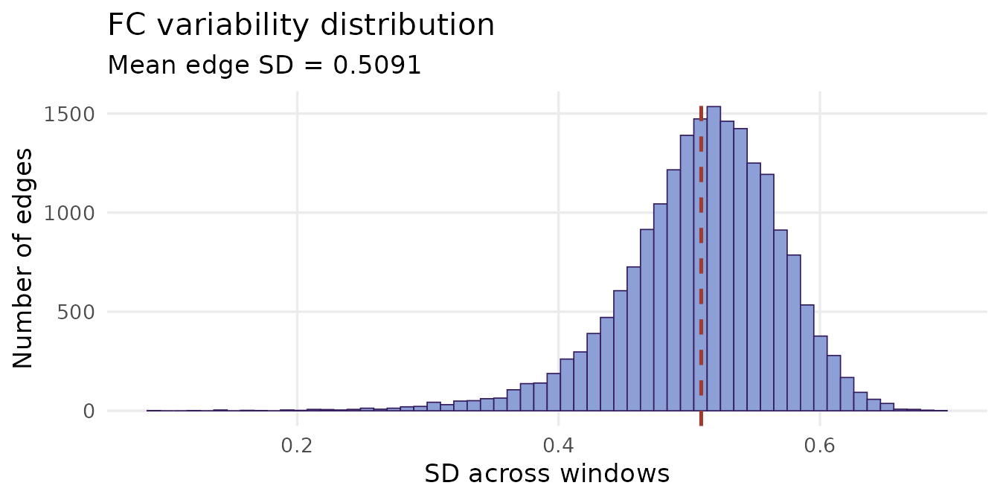
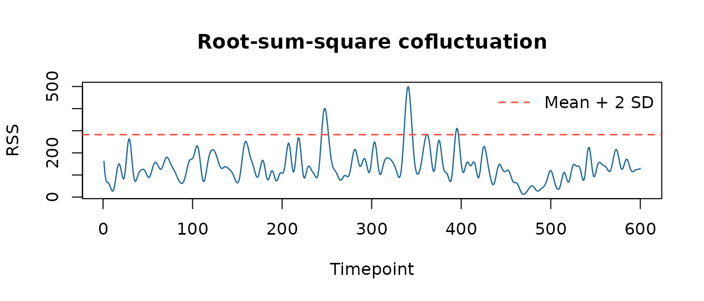
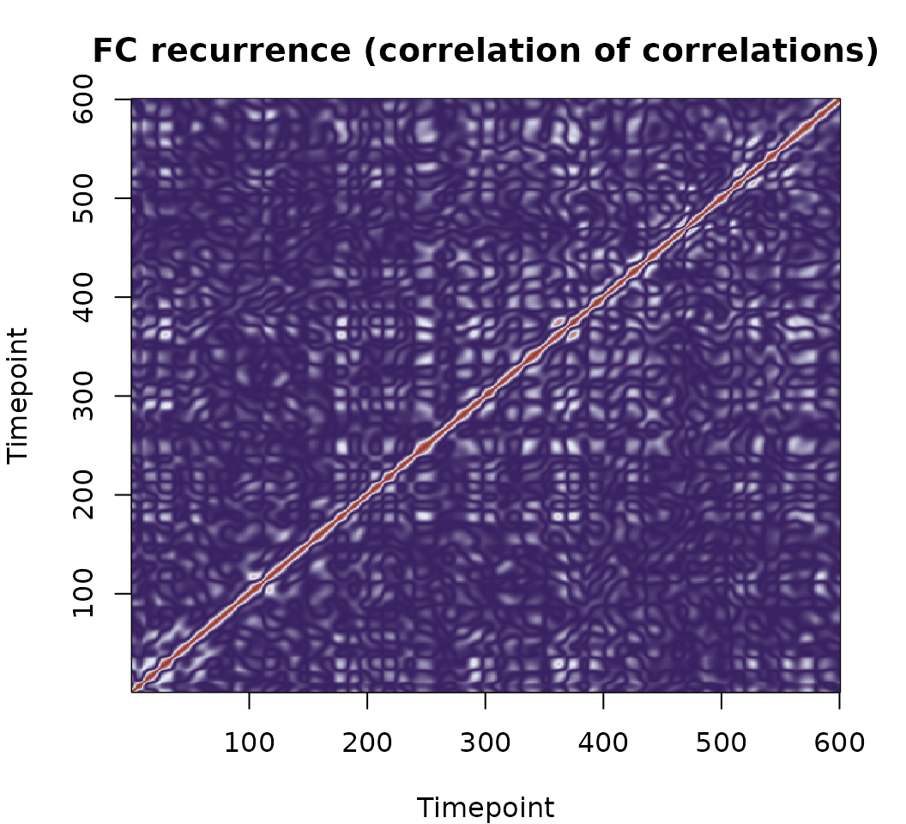
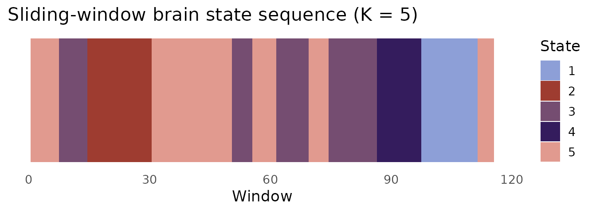

Correlation-based dynamic FC: sliding windows and edge cofluctuations
Source:vignettes/sliding-window-fc.Rmd
sliding-window-fc.RmdOverview
Correlation-based dynFC methods characterise how functional connectivity evolves over time by either windowing the timeseries into short segments and computing Pearson correlations within each window, or by analysing the instantaneous co-activation of parcel pairs as a continuous edge time series — no windowing required.
dynR implements three correlation-based functions:
| Function | Output | Method |
|---|---|---|
corr_slide() |
FC matrices | Sliding-window Pearson correlation |
cofluct() |
Edge time series + RSS | Edge-centric cofluctuation |
corr_corr() |
FC recurrence matrix | Hansen et al. (2015) |
Sliding-window correlation
Window length: a critical choice
Unlike phase-based methods, sliding-window FC requires you to commit to a window length. The trade-off is fundamental:
- Short windows (< 30 TRs): high temporal resolution, but FC estimates are noisy — reliable Pearson correlations require sufficient timepoints relative to the number of parcels.
- Long windows (> 60 TRs): stable, low-noise FC estimates, but rapid state transitions are averaged away.
- Typical choice: 30–60 TRs (60–120 s for TR = 2 s), with step size of 1 TR for fine temporal resolution or larger steps for efficiency (Hutchison et al., 2013; Leonardi & Van De Ville, 2015).
For this dataset (TR = 2 s, 600 timepoints), a few window choices look like:
TRs <- c(20, 30, 45, 60)
data.frame(
`Window (TRs)` = TRs,
`Duration (s)` = TRs * 2,
`N windows (step = 5)` = floor((600 - TRs) / 5) + 1L,
check.names = FALSE
)
#> Window (TRs) Duration (s) N windows (step = 5)
#> 1 20 40 117
#> 2 30 60 115
#> 3 45 90 112
#> 4 60 120 109
sw <- corr_slide(ts, window = 30, step = 5)
cat("Window: 30 TRs (60 s at TR = 2 s)\n")
#> Window: 30 TRs (60 s at TR = 2 s)
cat("Step: 5 TRs (10 s)\n")
#> Step: 5 TRs (10 s)
cat("N windows:", dim(sw$corr_mats)[3], "\n")
#> N windows: 115Validating against static FC
A single window spanning the full timeseries must recover the static FC matrix exactly.
FC variability across windows
The standard deviation of each edge across windows — its FC variability — reveals which connections drive the dynamic signal. Edges with high variability are the ones that genuinely fluctuate; edges with near-zero variability are essentially static.
n_parcels <- dim(sw$corr_mats)[1]
ut <- which(upper.tri(diag(n_parcels)), arr.ind = TRUE)
edge_by_window <- apply(sw$corr_mats, 3, function(m) m[ut])
edge_sd <- apply(edge_by_window, 1, sd)
ggplot(data.frame(sd = edge_sd), aes(x = sd)) +
geom_histogram(bins = 60, fill = "#8D9FD7", colour = "#341C5D",
linewidth = 0.3) +
geom_vline(xintercept = mean(edge_sd),
colour = "#9E3C30", linetype = "dashed", linewidth = 0.9) +
labs(x = "SD across windows", y = "Number of edges",
title = "FC variability distribution",
subtitle = paste0("Mean edge SD = ", round(mean(edge_sd), 4))) +
theme_minimal(base_size = 13) +
theme(panel.grid.minor = element_blank())
Edge-centric cofluctuations
The edge-centric framework (Esfahlani et al., 2020; Faskowitz et al., 2020) abandons the window entirely. Instead, each parcel’s timeseries is z-standardised and the element-wise product of every unique parcel pair is computed at every timepoint:
The result is an edge time series — a continuous, frame-by-frame estimate of co-activation for every pair.
ec <- cofluct(ts)
n_edges <- nrow(ec$edge_ts)
cat("Edges (N*(N-1)/2):", n_edges, "\n")
#> Edges (N*(N-1)/2): 19900
cat("Timepoints: ", ncol(ec$edge_ts), "\n")
#> Timepoints: 600Root-sum-square (RSS) cofluctuation
The RSS vector summarises the total co-activation amplitude across all edges at each timepoint:
High-RSS frames are moments of unusually strong, synchronised co-activation across the whole brain. These high-amplitude events have been shown to disproportionately drive the structure of the static FC matrix — a small fraction of timepoints accounts for most of the long-run average connectivity (Esfahlani et al., 2020).
thr <- mean(ec$rss) + 2 * sd(ec$rss)
df_rss <- data.frame(t = seq_along(ec$rss), rss = ec$rss,
high = ec$rss > thr)
ggplot(df_rss, aes(x = t, y = rss)) +
geom_line(colour = "#8D9FD7", linewidth = 0.6) +
geom_hline(yintercept = thr,
colour = "#9E3C30", linetype = "dashed", linewidth = 0.9) +
annotate("text",
x = max(df_rss$t) * 0.02, y = thr + 0.8,
label = paste0("Mean + 2 SD (n = ",
sum(df_rss$high), " frames)"),
colour = "#9E3C30", size = 3.5, hjust = 0) +
labs(x = "Timepoint", y = "RSS",
title = "Root-sum-square cofluctuation",
subtitle = paste0(round(mean(df_rss$high) * 100, 1),
"% of timepoints exceed threshold")) +
theme_minimal(base_size = 13) +
theme(panel.grid.minor = element_blank())
Correlation of correlations
corr_corr() computes a
matrix of pairwise correlations between edge time series. Entry
(t1, t2) answers: how similar was the brain’s
whole-network co-activation pattern at timepoint t1 to that at
t2?
This makes it a temporal recurrence matrix — a fingerprint of how often the brain revisits similar FC configurations. Key features to look for:
- Bright off-diagonal blocks: the brain revisiting similar co-activation states at different times.
- Diagonal block structure: sustained states that persist over consecutive timepoints.
- Sparse, diffuse structure: rapidly shifting, non-recurrent dynamics.
pal <- colorRampPalette(c("#341C5D", "#E8ECF8", "#9E3C30"))(256)
par(mar = c(4, 4, 3, 2))
image(seq_len(nrow(cc)), seq_len(ncol(cc)), cc,
col = pal,
xlab = "Timepoint", ylab = "Timepoint",
main = "FC recurrence (correlation of correlations)")
Warm colours indicate timepoints where the brain was in similar connectivity configurations; cool colours indicate dissimilar states. Visible block structure along the diagonal suggests sustained, recurring FC patterns.
Brain state analysis from sliding-window FC
The upper triangle of each window’s FC matrix can be vectorised and clustered with K-means to identify recurring connectivity states.
features <- t(apply(sw$corr_mats, 3, function(m) m[ut]))
set.seed(42)
K <- 5
km <- kmeans(features, centers = K, nstart = 100, iter.max = 500)Note on dimensionality: each feature vector has N(N−1)/2
entries — 19,900 for 200 parcels. This high dimensionality makes K-means
convergence slower and noisier than in the LEiDA case, where each
feature vector has only N entries. For smaller datasets or
single-subject analyses, the LEiDA approach (see
vignette("phase-based-fc")) is often preferable.
state_cols <- c("#8D9FD7", "#9E3C30", "#754D71", "#341C5D", "#E19A8F")
ggplot(data.frame(t = seq_along(km$cluster),
state = factor(km$cluster)),
aes(x = t, y = 1, fill = state)) +
geom_tile(height = 1) +
scale_fill_manual(values = state_cols, name = "State") +
labs(x = "Window", y = NULL,
title = "Sliding-window brain state sequence (K = 5)") +
theme_minimal(base_size = 13) +
theme(axis.text.y = element_blank(),
axis.ticks.y = element_blank(),
panel.grid = element_blank())
The state sequence feeds directly into stateR for
fractional occupancy, dwell time, and Markov transition analysis.
References
Hutchison, R. M. et al. (2013). Dynamic functional connectivity: Promise, issues, and interpretations. NeuroImage, 80, 360–378. https://doi.org/10.1016/j.neuroimage.2013.05.079
Leonardi, N. & Van De Ville, D. (2015). On spurious and real fluctuations of dynamic functional connectivity during rest. NeuroImage, 104, 430–436. https://doi.org/10.1016/j.neuroimage.2014.09.007
Hansen, E. C. A. et al. (2015). Functional connectivity dynamics: Modeling the switching behavior of the resting state. NeuroImage, 105, 525–535. https://doi.org/10.1016/j.neuroimage.2014.11.001
Esfahlani, F. Z. et al. (2020). High-amplitude cofluctuations in cortical activity drive functional connectivity. PNAS, 117(45), 28393–28401. https://doi.org/10.1073/pnas.2005531117
Faskowitz, J. et al. (2020). Edge-centric functional network representations of human cerebral cortex reveal overlapping system-level architecture. Nature Neuroscience, 23(12), 1644–1654. https://doi.org/10.1038/s41593-020-00719-y